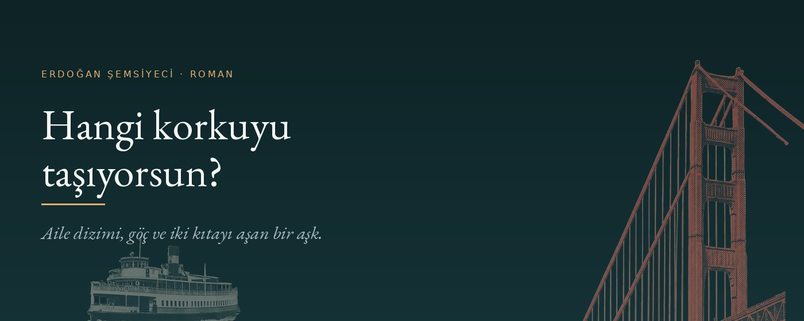
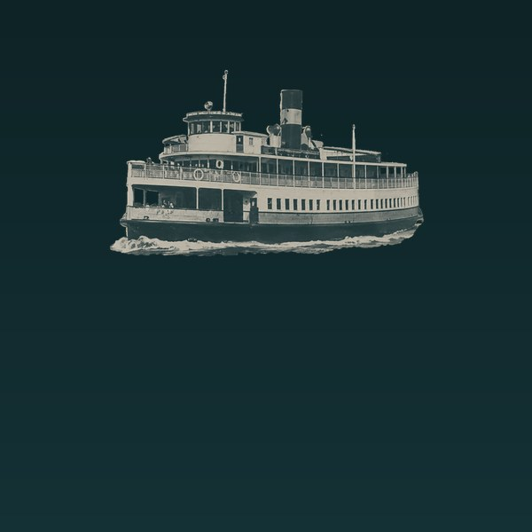
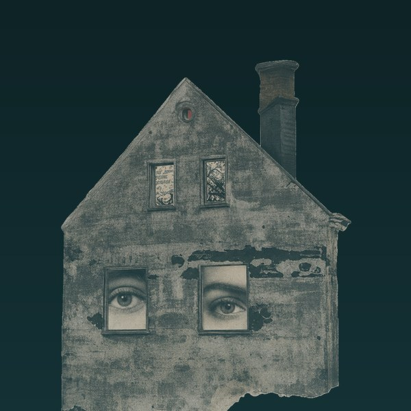
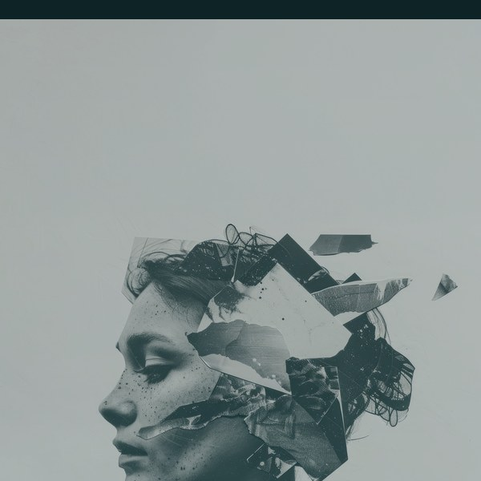

Kitap
Eğer biri doğruysa, diğeri neden var?
San Francisco'da insani yardım alanında çalışan Elena Hayes, kendisine çocukluğundan beri anlatılan aile hikâyesiyle örtüşmeyen bir kayda rastlar. Soru basittir ama peşini bırakmaz.
İz onu İstanbul'a, Karadeniz'de küçük bir kasabaya ve oradan Ege'ye taşır. Köklerden Göklere, kuşaklar arasında taşınan sessizliği, göçün ardında bıraktığı boşlukları ve kolay yanıtı olmayan bir soruyu konu alıyor: atalarımız zarar verdiyse, bugün yaşayanlar neyin borçlusu?
Romanın Türkçe baskısı hazırlanıyor. İngilizce adı: Roots to Sky: When the Soul Remembers.


İstanbul
Karadeniz'de bir kasaba
Ege'de bir koyGoodreads çekilişi
Kindle kopyası kazan
Goodreads'te 100 Kindle kopyası çekilişte. Katılım ücretsiz, bir dakika sürer. Çekiliş 23 Kasım'da kapanıyor — kitabın çıkışından bir gün önce. Kazananlara Goodreads haber veriyor.
Goodreads hesabı yeterli. Satın alma yok, bana e-posta yok — katılım Goodreads'te kalıyor. Çekiliş sayfası İngilizcedir; kitabın İngilizce baskısı içindir.
23 Kasım 2026'ya kadar açık
Okuyanlar için
Elif Şafak
Yaa Gyasi
Kristin Hannah
Kuşaklar boyu taşınan yükü ve onu yere bırakmanın bedelini sakınmadan anlatan bir aile romanı.
İlk okurlar
Erken kopyalar ilk okur çemberinde. Sözleri, kitap çıkmadan önce burada görünecek.
Erken okumak ister misiniz? Romanın İngilizce baskısının 100 ücretsiz PDF kopyası doğrudan bu siteden gönderiliyor. Kitap sizinle kalırsa Amazon ya da Goodreads'te dürüst bir yorum çok şey ifade eder. Bu bir rica, hiçbir zaman şart değil.
Türkçe baskı ayrıca hazırlanıyor; çıktığında haber listesinden duyurulur.